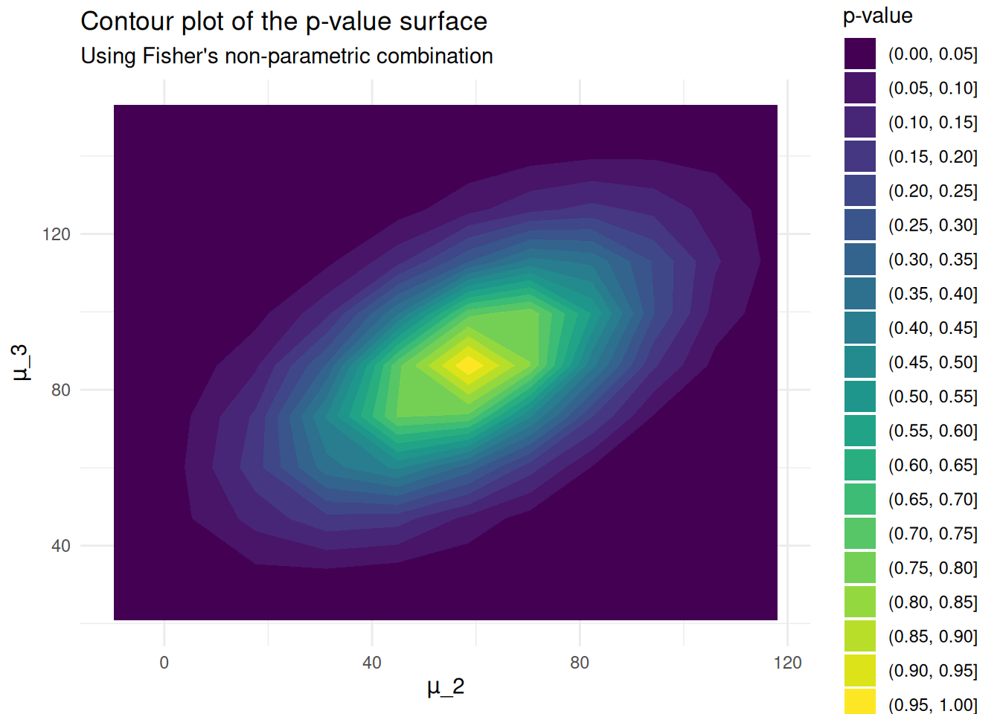

data <- chickwts$weight[1:36] # 1 variable
memberships <- as.factor(chickwts$feed[1:36]) # 1 factor with 3 populations
# takes all samples except the first one
null_spec <- function(l, parameters) {
purrr::map2(l, parameters, \(l, param) l - param)
}
stat_functions <- list(stat_anova_f)
# all means except first one
stat_assignments <- list(mu2 = 1, mu3 = 1)
pf <- PlausibilityFunction$new(
null_spec = null_spec,
stat_functions = stat_functions,
stat_assignments = stat_assignments,
data, memberships
)
pf$set_alternative("right_tail")
pvalue1 <- pf$get_value(rep(0, 2))The package allows user to perform (M)-ANOVA. Two examples are shown in this article for more clarity. User can pass data in the plausibility function as two possible formats:
- An object with all samples and a factor containing group memberships.
- Each sample representing a group.
Both cases will appear in this article. Since we use Fisher tests, it is important to change the alternative parameter of the plausibility function to right_tail.
Plausibility function for 1-ANOVA 🐓
For this example, data represent chicken weights by feed type. There are three populations that have been fed different types of food. The null hypothesis is
with representing the sample mean in the group .
pvalue1
#> [1] 0.002997003
samples <- purrr::map(unique(as.numeric(memberships)), \(.class) {
data[which(as.numeric(memberships) == .class)]
})
means <- c(mean(samples[[2]]) - mean(samples[[1]]),
mean(samples[[3]]) - mean(samples[[1]]))
pvalue1_est <- pf$get_value(means)
pvalue1_est
#> [1] 1
pf$set_point_estimate(means)
point_estimate1 <- pf$point_estimate
point_estimate1
#> mu2 mu3
#> 58.55000 86.22857
pf$set_parameter_bounds(
point_estimate = pf$point_estimate,
conf_level = pf$max_conf_level
)
pf$set_grid(
parameters = pf$parameters,
npoints = 10
)
pf$evaluate_grid(grid = pf$grid)
grid1 <- pf$grid
grid1 %>%
ggplot(aes(mu2, mu3, z = pvalue)) +
geom_contour_filled(binwidth = 0.05) +
labs(
title = "Contour plot of the p-value surface",
subtitle = "Using Fisher's non-parametric combination",
x = expression(paste(mu, "_2")),
y = expression(paste(mu, "_3")),
fill = "p-value"
) +
theme_minimal()
Plausibility function for 2-ANOVA 🌸
In this example, data used represent flower caracteristics by their specie. The variables are sepal length and sepal width that are compared bewteen three different flower species. The null hypothesis is
with representing the sample mean in the group for the variable .
iris_setosa <- iris |> filter(Species == "setosa")
iris_setosa <- iris_setosa[1:10,1:2]
iris_versicolor <- iris |> filter(Species == "versicolor")
iris_versicolor <- iris_versicolor[1:10,1:2]
iris_virginica <- iris |> filter(Species == "virginica")
iris_virginica <- iris_virginica[1:10,1:2]
# takes all samples except the first one
null_spec <- function(l, parameters) {
parameters <- split(parameters, ceiling(seq_along(parameters) / (length(parameters)/length(l))))
purrr::map2(l, parameters, \(group, params) {
purrr::map2(group, params, \(var, param) {
var - param
}) |> as.data.frame()
})
}
stat_functions <- list(stat_anova_f)
# all means except ones from first sample
stat_assignments <- list(
mu2_1 = 1, mu2_2 = 1,
mu3_1 = 1, mu3_2 = 1)
pf <- PlausibilityFunction$new(
null_spec = null_spec,
stat_functions = stat_functions,
stat_assignments = stat_assignments,
iris_setosa, iris_versicolor, iris_virginica
)
pf$set_alternative("right_tail")
pvalue2 <- pf$get_value(rep(0, 4))
pvalue2
#> [1] 0.000999001
d1 <- c(
mean(iris_versicolor$Sepal.Length) - mean(iris_setosa$Sepal.Length),
mean(iris_versicolor$Sepal.Width) - mean(iris_setosa$Sepal.Width)
)
d2 <- c(
mean(iris_virginica$Sepal.Length) - mean(iris_setosa$Sepal.Length),
mean(iris_virginica$Sepal.Width) - mean(iris_setosa$Sepal.Width)
)
pvalue1_est <- pf$get_value(c(d1, d2))
pvalue1_est
#> [1] 1
pf$set_point_estimate(c(d1, d2))
point_estimate2 <- pf$point_estimate
point_estimate2
#> mu2_1 mu2_2 mu3_1 mu3_2
#> 1.24 -0.44 1.71 -0.37
pf$set_parameter_bounds(
point_estimate = pf$point_estimate,
conf_level = pf$max_conf_level
)
pf$set_grid(
parameters = pf$parameters,
npoints = 10
)
pf$evaluate_grid(grid = pf$grid)
grid2 <- pf$grid
grid2 |> dplyr::filter(pvalue > 0.99)
#> # A tibble: 1 × 5
#> mu2_1 mu2_2 mu3_1 mu3_2 pvalue
#> <dbl> <dbl> <dbl> <dbl> <dbl>
#> 1 1.24 -0.44 1.71 -0.37 1Conclusion
For these two examples, means are different in each population. Thus, when we test the equality of means with get_value(0), we get a pvalue close to 0, allowing us to reject the hypothesis that the means are equal within the different populations. On the other hand, if we get the pvalue for the test on the estimator values, it is equal to 1, the largest possible value, which is coherent.